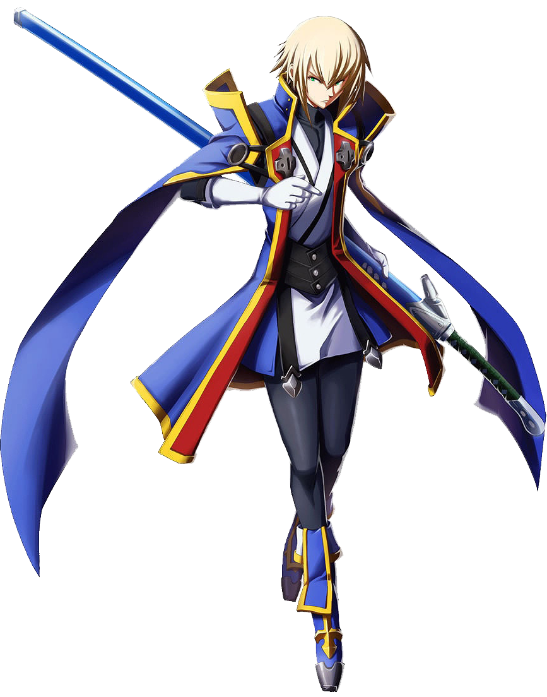

Jin Kisaragi
Where his brother Ragna is hot-tempered and quick to draw first blood, Jin is cold, aloof, and borderline sociopathic. He cares little for the feelings of others, and denounces, in his own words, trivialities like camaraderie, believing that such things are lies that people use to their advantage. He has no compunction with killing anyone who gets in the way of his goal. In addition, he repeatedly shows that he dislikes reminiscing about the past, particularly about his days at the Military Academy.